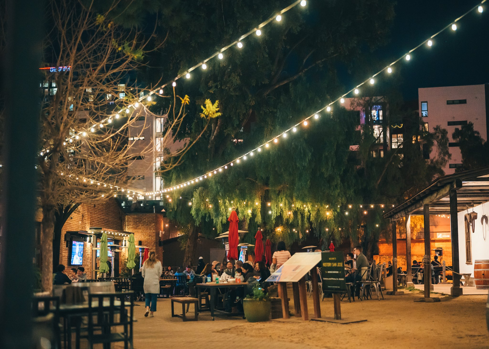

Sea-Tac Airport
The Beginning of Our Journey



Starting Our Journey
We met in the lower floors of Seattle Tacoma airport. Then we took a couple pictures and set off towards the security check. After we got past security, we walked to our gate, there for the first time in my life I bought chips from a vending machine. After having waited about 45 minutes we got on the plane. We took of with 0 noise complaints and landed with 17. After the loudest flight I have experianced in my short life of 11 years and somthing months, we left the gate. But then some people had to got the bathroom. During this time some of us... started ridng on those moving walkways in SFO. But in my defense it was fun. Anyway we took a bus to san pedro market. There we had lunch, and lincoln gave a stunning Never Gonna Give you up performence. After that we got back on the bus and took it to the hotel. Then we unpacked and spent our first night in Monteray